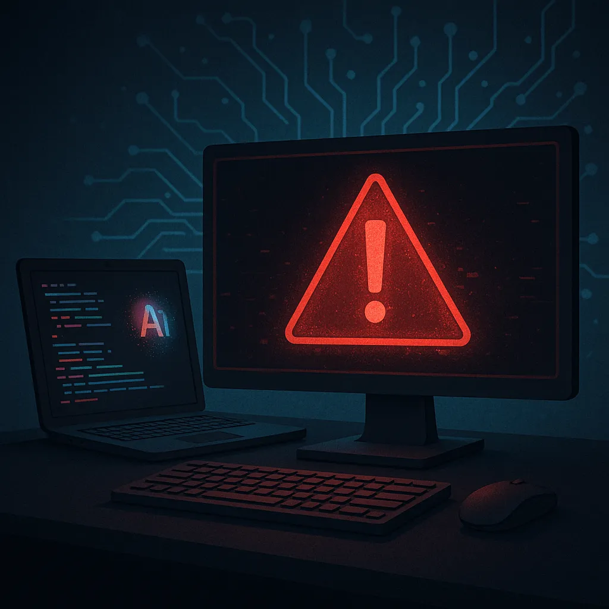

AI can accelerate implementation, testing, and review across an entire product. A security audit asks a different question: can the team show how risks were identified, controls were chosen, and behavior was verified? At Bill Vivino Technology, we pair AI productivity with a disciplined secure-development process so teams can move quickly and produce credible audit evidence.
Feature delivery and security evidence are different work
Coding agents can contribute to secure design and implementation, but an auditor still needs traceable evidence. If the team has optimized only for working features and speed, review questions about threat models, dependencies, access controls, and verification can create gaps that delay a release.
Common failure patterns we see in audits
- Dependency risk - Generated or hand-written code can pin old libraries or pull in transitive packages with known CVEs and no SBOM.
- Auth and session flaws - Incomplete token validation, missing rotation, or non-scoped tokens that break least privilege.
- Input and output handling - Naive sanitation that fails on edge cases, creating injection paths across API, ORM, and template layers.
- Secrets management - Credentials in source, logs, or CI variables without vaulting, rotation, or environment-scoped access.
- Logging without controls - Helpful for debugging, harmful for compliance when PII is written without redaction or retention rules.
- Missing traceability - No threat model, no architecture decision records, and no evidence that controls map to a standard.
Why unreviewed generation increases risk
Vibe coding can create valuable momentum and help you get a demo live fast. But neither AI nor human-written code automatically guarantees alignment with frameworks like OWASP ASVS or NIST SSDF. When auditors ask Why does this control exist and where is it verified, a code dump is not enough.
Pair AI with a security system
We pair AI coding with a repeatable secure SDLC designed to support enterprise and startup audits. Our approach:
- Design first - Lightweight threat modeling and data-flow diagrams before code generation.
- Policy-as-code - Repo templates with mandatory checks, secrets scanning, IaC drift detection, and SBOM generation.
- Standards mapping - Controls mapped to OWASP ASVS with evidence artifacts.
- Continuous verification - SAST, DAST, dependency review, and container scan gates in CI with fail-closed rules.
- Human review - Senior engineers validate AI output and document risks, compensating controls, and exceptions.
Proof from the field
Teams come to us after internal audits or pen tests flag issues like hardcoded secrets or insecure auth flows. We harden the stack, write missing tests, and produce clean audit evidence. See examples in our portfolio, then contact us for specifics under NDA.

Checklist: prepare AI-assisted code for an audit
- Define a one-page threat model and data classification for the feature.
- Generate code with AI, but require PRs to reference controls and tests.
- Add SBOM, license scan, and dependency review to CI.
- Enforce secret scanning and vault integration for all environments.
- Run SAST and DAST for every merge to main and release branch.
- Log with redaction, trace IDs, and retention policy alignment.
- Document compensating controls and store evidence in the repo.
People also ask
Why can AI-assisted code struggle in a security audit?
Interviewers want a structured answer: lack of standards mapping, insufficient input validation, weak secrets handling, and missing evidence. Tie your response to controls and how to close gaps with CI policies and code review.
Do AI-generated code outages really happen
Yes. Outages occur in AI-assisted and hand-written systems when fragile assumptions go untested. Typical triggers include unbounded retries, unexpected input shapes, or race conditions created by naive async patterns. Proper testing and SRE guardrails reduce this risk.
Frequently Asked Questions
Can AI code a website that passes a security audit
AI can help produce components quickly, but passing an audit requires a process: secure design, vetted dependencies, tests, CI scan gates, and human review. We combine AI productivity with a hardened SDLC so your site is prepared for review.
What standards should we map to for web apps
Most teams use OWASP ASVS for app controls and add NIST SSDF practices for development lifecycle. Map each control to code, tests, CI checks, and evidence so auditors can verify without guesswork.
How fast can we remediate AI coding risks
Typical remediation takes one to three sprints depending on scope. We prioritize dependency risk, secrets, and auth first, then round out logging, tests, and documentation so you can pass the next review.
Key Takeaways
AI coding boosts speed, and the same tools can help with security work. Pair generation with secure design, standards mapping, CI gates, and accountable senior review. The result is faster development backed by evidence an auditor can evaluate.